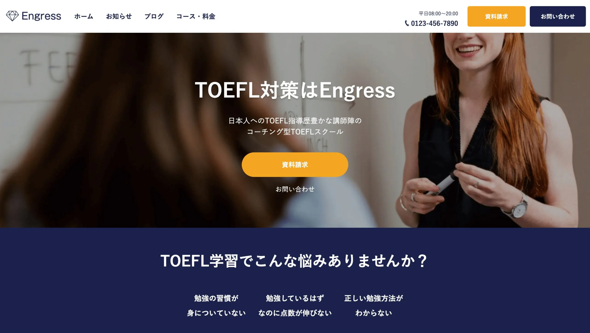
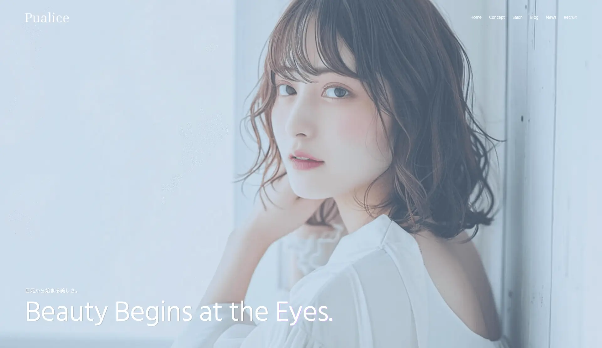
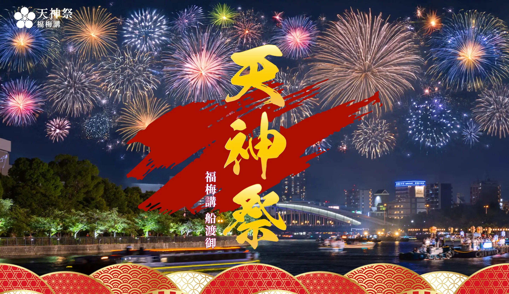

建設業コーポレートサイト
保守性を意識したCSS設計と、WordPressでの柔軟な運用を想定したコーディングで構築。スマートフォンから快適に閲覧できるレスポンシブ対応を丁寧に実装しました。
あなたの“伝えたい”を
確かな技術で形にするコーディングパートナー
制作会社様のコーディングパートナーとして
HTML / CSS / JavaScript / WordPressの
コーディング業務をサポートします
これまで制作・コーディングを担当したサイトの一部をご紹介します。

保守性を意識したCSS設計と、WordPressでの柔軟な運用を想定したコーディングで構築。スマートフォンから快適に閲覧できるレスポンシブ対応を丁寧に実装しました。

デザインの世界観を崩さないよう、細部のアニメーションやフォント選定にまでこだわってコーディング。予約ボタンへのスムーズな導線をUIで表現しました。

情報量が多いサイトでも迷わせないよう、レイアウトの優先順位を意識して実装。WordPressのブロック構成も更新しやすさを考慮して組みました。